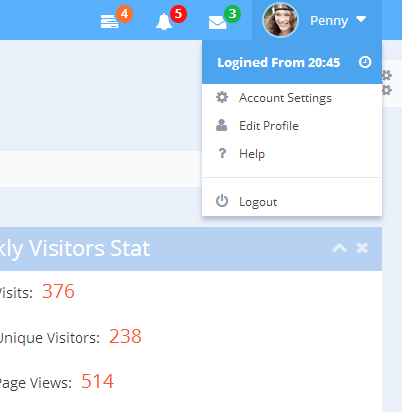
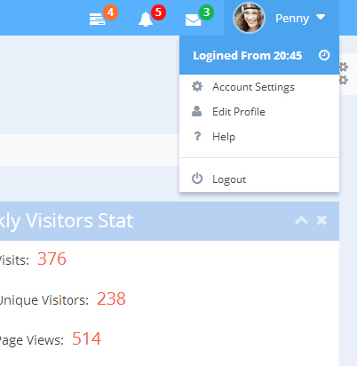
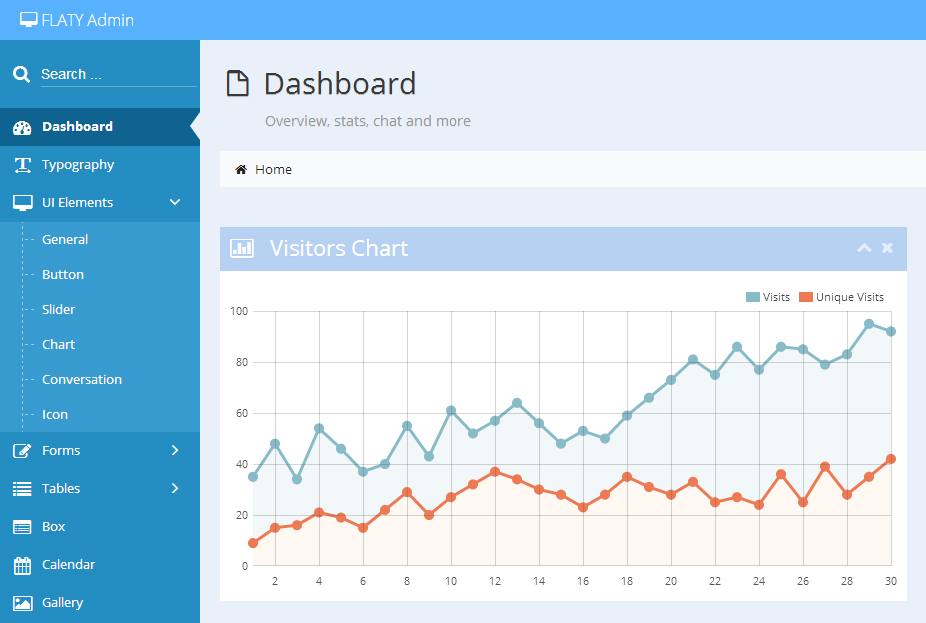

5. Sidebar
To topFLATY supports flexible 2 level navigation menu in sidebar.
Sidebar Navlist
<!-- BEGIN Sidebar -->
<div id="sidebar" class="navbar-collapse collapse">
<!-- BEGIN Navlist -->
<ul class="nav nav-list">
<!-- BEGIN Search Form -->
<li>
<form target="#" method="GET" class="search-form">
<span class="search-pan">
<button type="submit">
<i class="icon-search"></i>
</button>
<input type="text" name="search" placeholder="Search ..." autocomplete="off" />
</span>
</form>
</li>
<!-- END Search Form -->
<li class="active">
<a href="index.html">
<i class="icon-dashboard"></i>
<span>Dashboard</span>
</a>
</li>
<li>
<a href="typography.html">
<i class="icon-text-width"></i>
<span>Typography</span>
</a>
</li>
<li>
<a href="#" class="dropdown-toggle">
<i class="icon-desktop"></i>
<span>UI Elements</span>
<b class="arrow icon-angle-right"></b>
</a>
<!-- BEGIN Submenu -->
<ul class="submenu">
<li><a href="ui_general.html">General</a></li>
<li><a href="ui_button.html">Button</a></li>
<li><a href="ui_slider.html">Slider</a></li>
<li><a href="ui_tile.html">Tile</a></li>
<li><a href="ui_timeline.html">Timeline</a></li>
<li><a href="ui_chart.html">Chart</a></li>
<li><a href="ui_message.html">Conversation</a></li>
<li><a href="ui_icon.html">Icon</a></li>
</ul>
<!-- END Submenu -->
</li>
<li>
<a href="#" class="dropdown-toggle">
<i class="icon-edit"></i>
<span>Forms</span>
<b class="arrow icon-angle-right"></b>
</a>
<!-- BEGIN Submenu -->
<ul class="submenu">
<li><a href="form_layout.html">Layout</a></li>
<li><a href="form_component.html">Component</a></li>
<li><a href="form_wizard.html">Wizard</a></li>
<li><a href="form_validation.html">Validation</a></li>
</ul>
<!-- END Submenu -->
</li>
<li>
<a href="#" class="dropdown-toggle">
<i class="icon-list"></i>
<span>Tables</span>
<b class="arrow icon-angle-right"></b>
</a>
<!-- BEGIN Submenu -->
<ul class="submenu">
<li><a href="table_basic.html">Basic</a></li>
<li><a href="table_advance.html">Advance</a></li>
<li><a href="table_dynamic.html">Dynamic</a></li>
</ul>
<!-- END Submenu -->
</li>
<li>
<a href="#" class="dropdown-toggle">
<i class="icon-globe"></i>
<span>Maps</span>
<b class="arrow icon-angle-right"></b>
</a>
<!-- BEGIN Submenu -->
<ul class="submenu">
<li><a href="map_google.html">Google Maps</a></li>
<li><a href="map_vector.html">Vector Maps</a></li>
</ul>
<!-- END Submenu -->
</li>
<li>
<a href="box.html">
<i class="icon-list-alt"></i>
<span>Box</span>
</a>
</li>
<li>
<a href="calendar.html">
<i class="icon-calendar"></i>
<span>Calendar</span>
</a>
</li>
<li>
<a href="gallery.html">
<i class="icon-picture"></i>
<span>Gallery</span>
</a>
</li>
<li>
<a href="grid.html">
<i class="icon-th"></i>
<span>Griding System</span>
</a>
</li>
<li>
<a href="#" class="dropdown-toggle">
<i class="icon-file-text-alt"></i>
<span>Sample Pages</span>
<b class="arrow icon-angle-right"></b>
</a>
<!-- BEGIN Submenu -->
<ul class="submenu">
<li><a href="extra_login.html">Login & Register</a></li>
<li><a href="extra_profile.html">User Profile</a></li>
<li><a href="extra_invoice.html">Invoice</a></li>
<li><a href="extra_search.html">Search Results</a></li>
</ul>
<!-- END Submenu -->
</li>
<li>
<a href="#" class="dropdown-toggle">
<i class="icon-file"></i>
<span>Other Pages</span>
<b class="arrow icon-angle-right"></b>
</a>
<!-- BEGIN Submenu -->
<ul class="submenu">
<li><a href="more_blank.html">Blank Page</a></li>
<li><a href="more_full-width.html">Full Width Page</a></li>
<li><a href="more_error-404.html">Error 404</a></li>
<li><a href="more_error-500.html">Error 500</a></li>
<li><a href="more_set-skin.html">Skin</a></li>
<li><a href="more_set-sidebar-navbar-color.html">Sidebar & Navbar</a></li>
<li><a href="more_sidebar-collapsed.html">Collapsed Sidebar</a></li>
</ul>
<!-- END Submenu -->
</li>
</ul>
<!-- END Navlist -->
<!-- BEGIN Sidebar Collapse Button -->
<div id="sidebar-collapse" class="visible-lg">
<i class="icon-double-angle-left"></i>
</div>
<!-- END Sidebar Collapse Button -->
</div>
<!-- END Sidebar -->